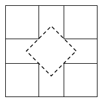

A carpet has a square shape with side 275cm. A moth has eaten 4 holes through it. Will it always be possible to cut a square section of side 1m out of the carpet, so that the section does not contain any holes? Treat the holes as points.
On the carpet it is possible to mark 5 non-overlapping squares of side 1m - see the diagram below, the dashed square is of side $0.75 \sqrt{2} >1$. At least one of these will be left without a hole in it.
Yes.